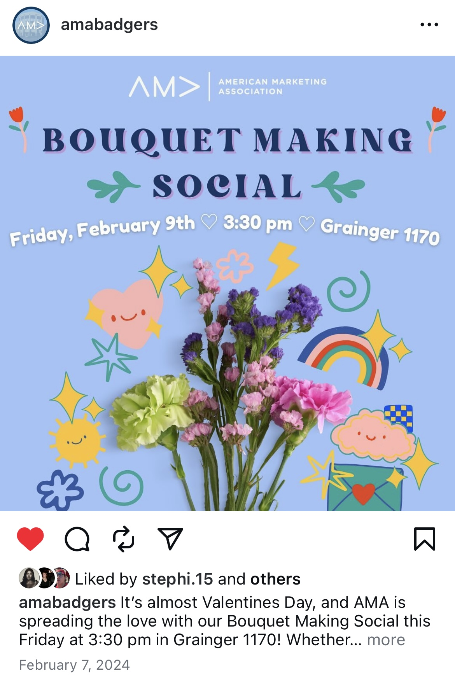
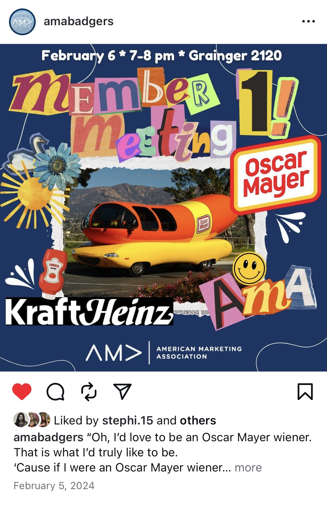
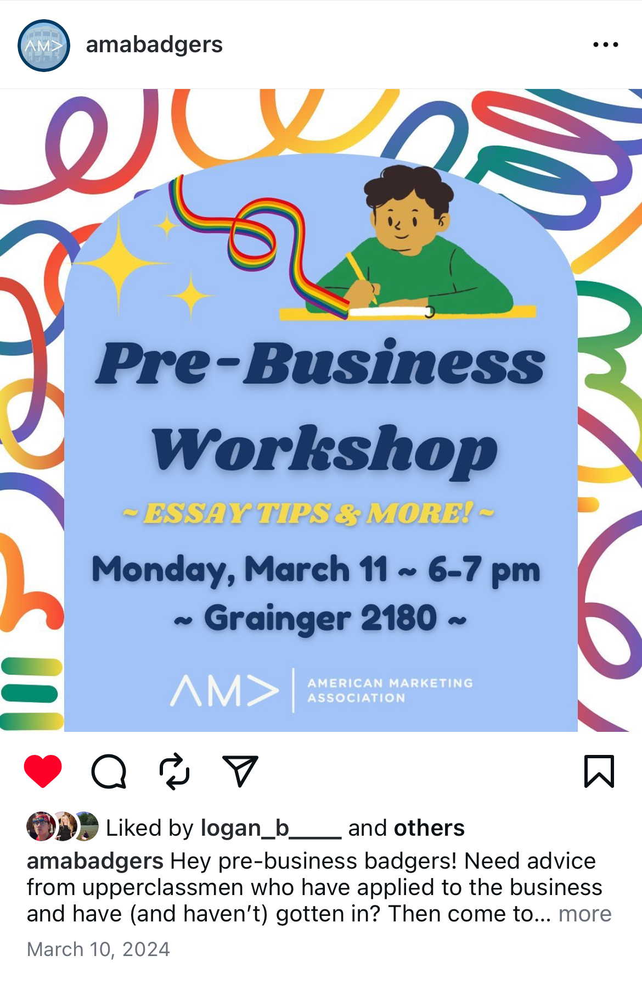
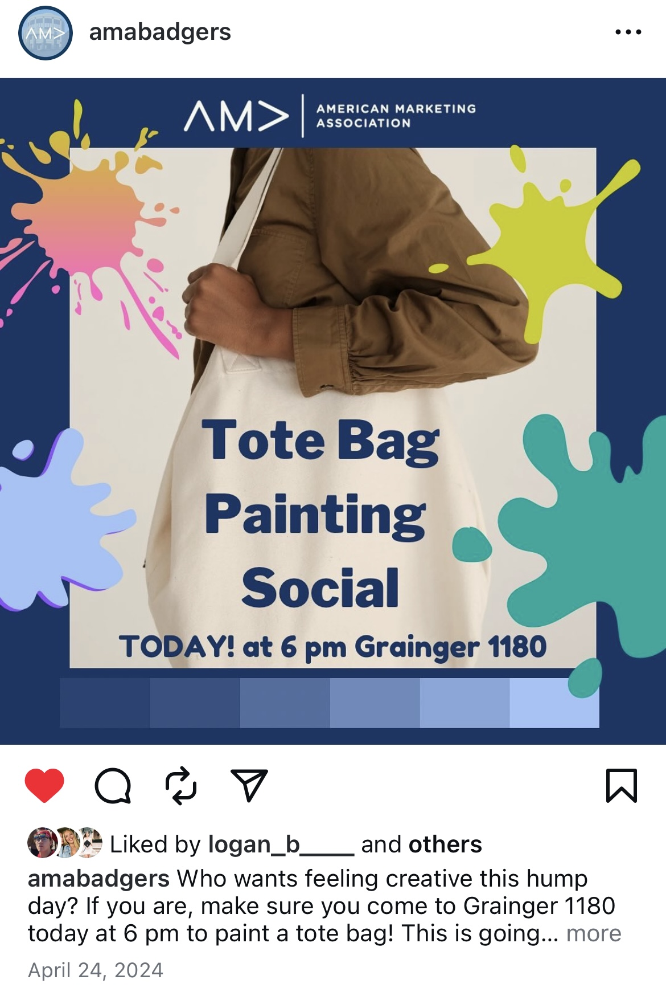
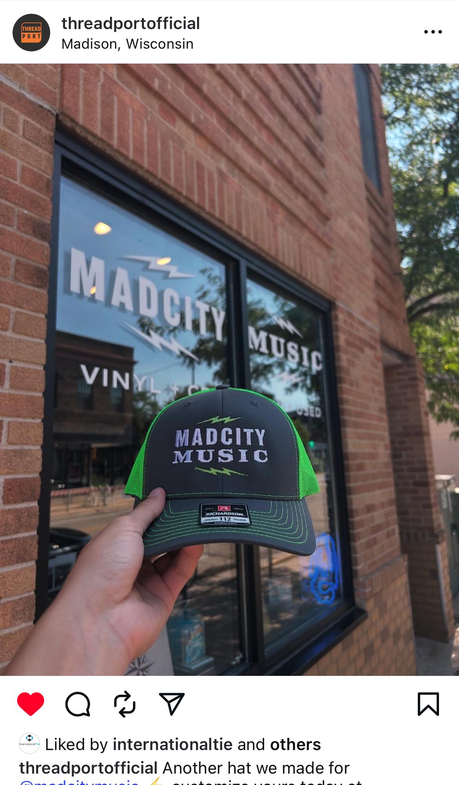
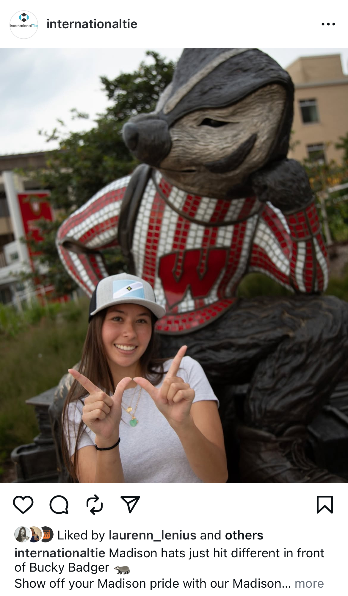
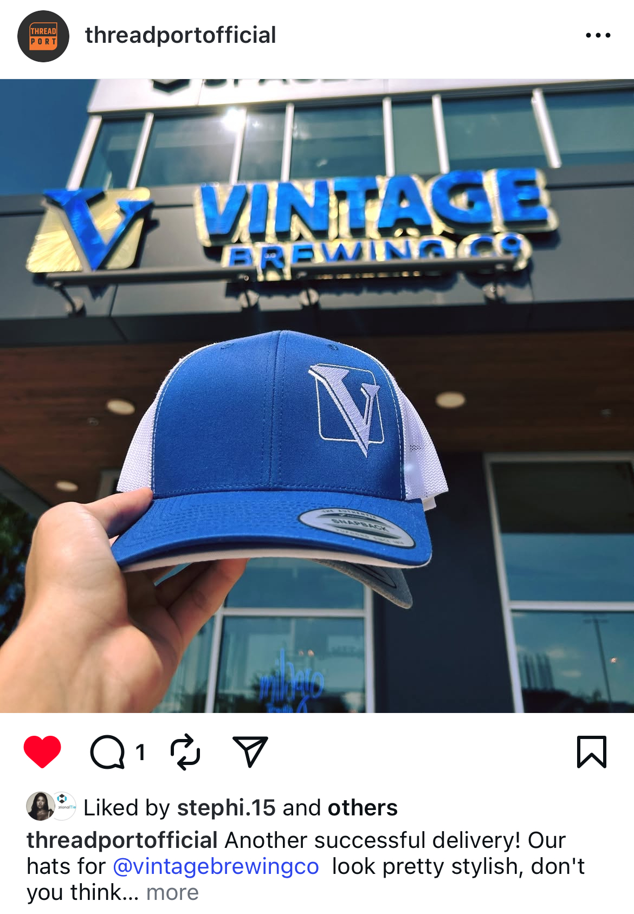
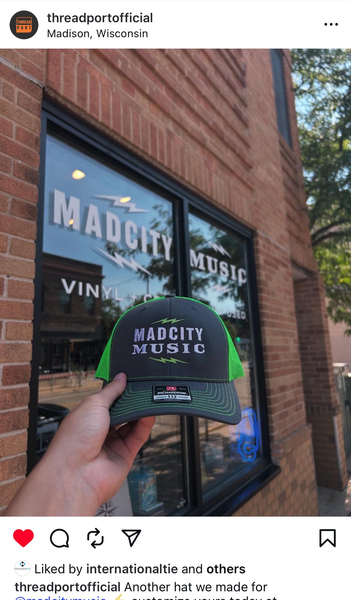
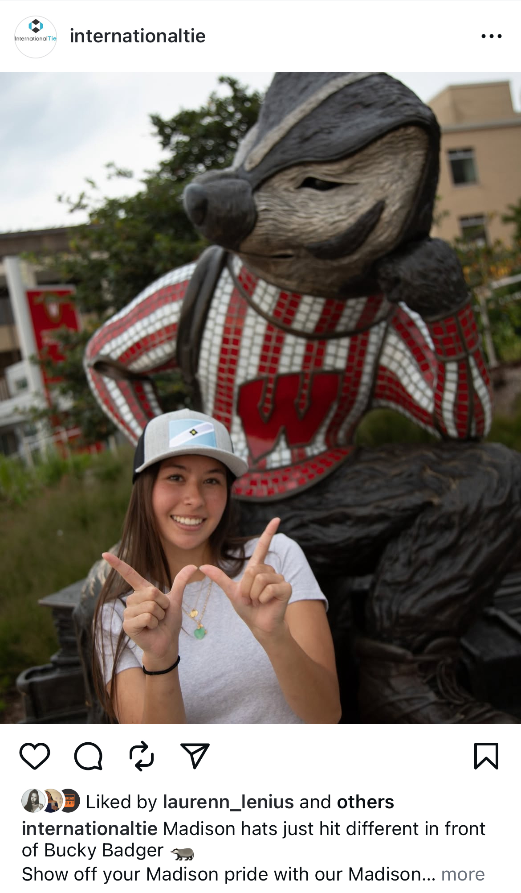
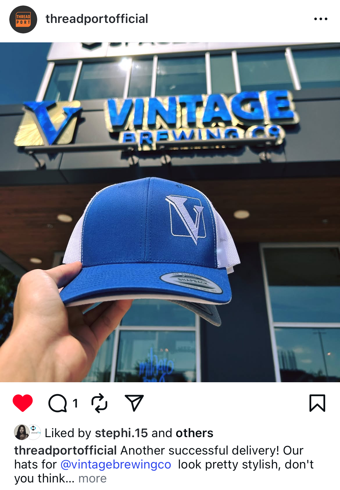

American Marketing Association
I have been a member of AMA my entire college career. During my sophomore year, I was elected onto the exec board as VP of Public Relations, where I was in charge of our chapter's branding on social media. I created content to engage club members and attract new members to our club. Here's some of my favorite pieces of content I made for Instagram (@AMABadgers):
   My junior year, I was elected to be our club's Vice President, where I worked closely with the President, business school, AMA nationals, and AMA Madison (the professional chapter for marketers in Madison) to keep operations running smoothly within the club. I also was in charge of creating, forming, and running 5 new committees that helped members engage in creative problem solving and working on marketing tasks to support AMA.
Marketing and Multibrand Strategy Director for ThreadPort, InternationalTie, and UrbanAugust
This past summer, I worked with an entrepreneur to help with the marketing and brand strategy for a new e-commerce brand, ThreadPort, while contributing to the branding of his existing brands, InternationalTie and UrbanAugust. In this position, I:
- Developed and optimized ad campaigns using Meta and TikTok Ads Manager
- Contributed to a 32% YOY sales increase and over $100k sales in Amazon for UrbanAugust and InternationalTie
- Increased brand credibility by providing timely and professional customer service, boosting Amazon reviews for all three brands by at least half a star
- Drove the creative direction of all 3 brands through photoshoots, web design, and content creation that drove customer engagement
Here's a couple of ads and posts I created for InternationalTie and ThreadPort. This content helped increase brand awareness and attract new and returning customers to shop for our products!


 





If you're interested in seeing more of the work I did for these brands, you can visit ThreadPort's Website, InternationalTie's Website, and UrbanAugust's Website to see some of the pictures and web design I did. The websites also lead to each company's social media page which I also developed!
Marketing Intern at A Better Solution in Home Care
I also worked remotely as a marketing intern for A Better Solution in Home Care the spring of my junior year, where I helped the company find caregivers and clients through targeted social media ad campaigns. I also managed communications between leads, partners, and ABS corporate to facilitate regional business growth.